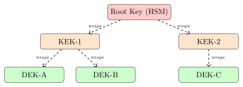

Chapter 5: Key Management and Public Key Infrastructure¶
Cryptographic algorithms provide security only when keys are properly managed. Weak generation, improper storage, or absent rotation negates the strongest algorithms. This chapter covers the full key lifecycle, the PKI trust hierarchy, HSMs, secret sharing, and crypto-agility.
5.1 Key Management Lifecycle¶
Definition 5.1 (Key Management Lifecycle)
The cryptographic key lifecycle consists of stages:
-
Generation: Create key using cryptographically secure random source
-
Distribution: Securely deliver key to authorized parties
-
Storage: Protect key at rest against unauthorized access
-
Usage: Apply key for cryptographic operations
-
Rotation: Replace key periodically or on compromise
-
Revocation: Invalidate key before normal expiry if compromised
-
Destruction: Securely delete key material (zeroization)
Every stage of the lifecycle is a potential failure point. Attackers don’t need to break AES-256 if they can steal the key from memory, predict it from a weak PRNG, or recover it from a disk because it was never properly zeroed. In practice, the most common key management failures are mundane: keys stored in environment variables committed to Git repos, hardcoded in application source, or written to log files during debugging. No amount of algorithm strength compensates for these operational mistakes.
5.1.1 Secure Key Generation¶
Keys must be generated from a cryptographically secure pseudorandom number generator (CSPRNG):
import os
import secrets
# OS CSPRNG (reads /dev/urandom on Linux, CryptGenRandom on Windows)
aes_key = os.urandom(32) # 256-bit AES key
hmac_key = os.urandom(32) # 256-bit HMAC key
# secrets module (Python 3.6+): cryptographically secure
token = secrets.token_bytes(32) # 256 random bits
hex_token = secrets.token_hex(32) # 64-hex-char token
url_safe = secrets.token_urlsafe(32)
# WRONG: Do NOT use random module for cryptographic keys
import random
# bad_key = random.randbytes(32) # Predictable! MT random is not secure
Entropy Sources
A CSPRNG is only as secure as its seed. Common failures:
-
Debian OpenSSL bug (2008): patch accidentally zeroed PID-based seed — only \(32{,}767\) possible keys for 1024-bit RSA
-
Android SecureRandom bug (2013): insufficient entropy at boot — Bitcoin wallet keys predictable
-
Virtual machines: entropy starvation at boot — wait for \(\texttt{/dev/random}\) to accumulate entropy
Modern Linux \(\texttt{getrandom()}\) syscall blocks until sufficient entropy; \(\texttt{/dev/urandom}\) does not block.
The Debian OpenSSL bug is worth studying in detail because it shows how a well-intentioned change can have catastrophic consequences. A developer trying to fix a Valgrind warning about reading uninitialized memory commented out two lines that contributed to the entropy pool. The result was that RSA keys generated on Debian-based systems for two years depended on only 15 bits of process ID. An attacker could enumerate all 32,767 possible keys and break any RSA, DSA, or ECDSA key generated on those systems. The fix required regenerating every affected key — a massive operational undertaking that many administrators delayed or skipped.
5.1.2 Envelope Encryption and Key Hierarchy¶
Definition 5.2 (Key Hierarchy)
A key hierarchy wraps lower-level keys with higher-level keys:
-
Root Key / Master Key: Top-level; never leaves HSM; used only to encrypt other keys
-
Key Encryption Key (KEK): Encrypts data encryption keys; rotated less frequently
-
Data Encryption Key (DEK): Used for bulk data encryption; rotated frequently

The hierarchy exists to limit blast radius. If a single DEK is compromised — say, extracted from a running server’s memory — only the data encrypted under that specific DEK is exposed. The KEK and Root Key remain safe. When the compromise is detected, you can revoke and replace that DEK, re-encrypt the affected data under a new DEK, and the rest of the system keeps running. Without a hierarchy, a single compromised key could expose all encrypted data.
Example 5.1 (AWS KMS Envelope Encryption)
-
Root key (Customer Master Key, CMK) stored in AWS KMS HSM — never exportable.
-
Application calls \(\texttt{GenerateDataKey}(CMK)\) and receives plaintext DEK + encrypted DEK.
-
Application encrypts data with plaintext DEK (in-memory); immediately discards plaintext DEK.
-
Application stores data alongside encrypted DEK (ciphertext envelope).
-
To decrypt: call \(\texttt{Decrypt}(CMK, \text{encrypted DEK})\) to get plaintext DEK, then decrypt data.
Key rotation: call \(\texttt{ReEncrypt}\) to re-wrap existing DEKs with new CMK — no re-encryption of data required.
5.2 Public Key Infrastructure (PKI)¶
Definition 5.3 (X.509 Certificate)
An X.509 certificate binds a public key to an identity, digitally signed by a Certificate Authority:
-
Subject: Identity (Common Name, Organization, Country, SANs)
-
Public Key: Subject’s public key (RSA/ECDSA/Ed25519)
-
Issuer: CA that signed this certificate
-
Validity: Not-Before and Not-After dates
-
Serial Number: Unique within issuing CA
-
Extensions: Subject Alternative Names, Key Usage, Basic Constraints
-
Signature: CA’s digital signature over all fields
X.509 certificates are the web’s identity infrastructure, but they’re frequently misunderstood. A certificate doesn’t prove that a website is trustworthy or legitimate — it proves only that a CA was convinced, at issuance time, that the subject controlled the listed domain names or had the listed identity. A phishing site can have a perfectly valid TLS certificate for its fake domain, which is why the browser padlock has always meant “encrypted connection,” not “safe site.” Domain Validated (DV) certificates in particular require only proof of domain control, which is easily automated and doesn’t verify the site’s purpose.
5.2.1 PKI Hierarchy¶
Why Offline Root CA?
The Root CA’s private key is the foundation of all trust. Compromising it invalidates every certificate in the hierarchy. Keeping the Root CA air-gapped means it’s only brought online for rare operations, such as signing a new intermediate CA certificate. Day-to-day issuance uses intermediate CAs; their compromise is contained.
“Offline” means literally offline: the Root CA HSM is stored in a physical vault, powered down, and brought out only for ceremonial key signings. Major public CAs document their Root CA ceremonies in detail, with notaries, external auditors, and on-camera key ceremonies. The entire process is designed around the assumption that the Root CA could be physically attacked or compromised, so its contact with networked systems is minimized to near-zero. When DigiNotar was compromised in 2011, an attacker who gained access to their online infrastructure was able to issue fraudulent certificates for Google, Yahoo, and others — the damage was possible precisely because the signing infrastructure had insufficient air-gap protection.
5.2.2 Certificate Validation — Chain of Trust¶
A browser validates a server certificate by:
-
Parse server’s certificate chain (leaf + intermediates)
-
Verify each certificate’s signature using issuer’s public key
-
Verify each certificate’s validity period, key usage, basic constraints
-
Verify root CA is in trusted root store (OS/browser maintained)
-
Check Certificate Revocation: OCSP or CRL
-
Verify hostname matches Subject/SANs (HTTPS:
example.com)
Step 5 (revocation checking) is the weakest link in practice. Most browsers implement “soft fail” for OCSP: if the OCSP responder is unreachable (due to network issues, DoS, or CA outage), the browser proceeds anyway. This means an attacker who can block OCSP traffic effectively makes revocation invisible, turning revocation into a false sense of security rather than an actual control. Chrome moved to CRLite (a probabilistic bloom filter of revoked certificates distributed as browser updates) partly to address this reliability problem.
5.2.3 Certificate Revocation¶
| Mechanism | Description | Limitation |
|---|---|---|
| CRL (RFC 5280) | Signed list of revoked serials | Stale; large files |
| OCSP (RFC 6960) | Real-time per-cert status query | Privacy leak; CA availability |
| OCSP Stapling | Server prefetches OCSP response | Only current session |
| CRLite / OCSP Must-Staple | Compressed CRL in browser | Limited adoption |
OCSP stapling is a meaningful improvement over raw OCSP: the server fetches its own OCSP response and staples it to the TLS handshake, so clients don’t need to contact the CA. This eliminates the privacy leak (the CA learning which clients are visiting which sites), removes the CA as a reliability dependency, and prevents the soft-fail attack. OCSP Must-Staple (an X.509 extension that tells browsers to reject the certificate if no stapled response is present) would close the loop entirely, but adoption has been slow because it adds operational complexity for certificate operators.
5.2.4 Certificate Transparency (CT)¶
Definition 5.4 (Certificate Transparency (RFC 9162))
CT requires CAs to log every issued certificate to publicly auditable, append-only logs. Browsers require:
-
At least 2 Signed Certificate Timestamps (SCTs) from different CT logs
-
SCT embedded in certificate, TLS extension, or OCSP response
CT lets domain owners monitor for misissuance — rogue certificates for their domain.
CT logs use a Merkle hash tree structure to provide tamper evidence: appending a new certificate extends the tree, and the log operator must provide a consistency proof showing the new tree is a superset of the old one. Any retrospective deletion or modification of a logged certificate would require changing the tree root, which is publicly signed by the log operator. Multiple independent logs make it infeasible for even a colluding log operator and CA to silently remove evidence of misissuance — at least one log will have the record.
BGP Hijack to Obtain DV Certificate (2018)
An attacker hijacked BGP routes for an IP prefix, then passed ACME HTTP-01 domain validation for that IP range, obtaining a legitimate DV certificate for example.com. CT logs detected the misissuance within minutes. Certificate Transparency enables detection but not prevention.
Mitigations: DNSSEC + CAA records; multi-perspective validation (Let’s Encrypt validates from 4+ locations since 2020).
5.3 Hardware Security Modules (HSMs)¶
Definition 5.5 (HSM)
A Hardware Security Module is a tamper-resistant hardware device that:
-
Generates and stores cryptographic keys in hardware
-
Performs cryptographic operations internally (key never leaves HSM in plaintext)
-
Detects and responds to physical tampering (key zeroization)
-
Meets FIPS 140-3 or Common Criteria certification requirements
An HSM’s fundamental promise is that the private key never exists outside the HSM boundary in plaintext form. When you ask an HSM to sign data, it performs the computation internally and returns only the signature — the private key never leaves. This property is what makes HSMs valuable for CA signing keys and payment credentials: even a fully compromised operating system can’t extract the key, because the key only ever lives in the HSM’s own tamper-resistant storage. An attacker who compromises a server using an HSM can at most request signatures, not steal the key itself.
| Use Case | HSM Type | Example Products |
|---|---|---|
| PKI Root CA | Network HSM / offline USB HSM | Thales Luna, Entrust nShield |
| TLS private keys | Network HSM | AWS CloudHSM, Google Cloud HSM |
| Payment (PINs) | PCI-HSM | Thales payShield, Utimaco SecurityServer |
| Code signing | USB token | Yubikey (FIPS), SafeNet eToken |
| IoT key injection | Manufacturing HSM | nCipher nShield Connect |
FIPS 140-3 Levels:
-
Level 1: Software only; no physical protection
-
Level 2: Tamper-evident labels; RBAC
-
Level 3: Tamper-resistant; key zeroization on tamper detection
-
Level 4: Complete physical protection; environmental attack response
Level 4 is genuinely impressive engineering. These devices monitor for unusual temperature, voltage, radiation, and physical pressure; detect epoxy-removal attempts; and respond by actively zeroizing all key material within microseconds of detecting an anomaly. An attacker who drills into a Level 4 HSM triggers key destruction before the drill reaches the secure element. In practice, most commercial deployments use Level 3, which provides strong physical protection at a reasonable cost; Level 4 is reserved for the most sensitive government and financial applications.
In practice, HSM operations add latency: a typical network HSM signing operation takes 1–5ms, compared to microseconds for an in-memory software operation. For TLS termination serving millions of connections per second, this latency matters. The standard architectural pattern is to store the TLS private key in the HSM but generate ephemeral session keys in software — the HSM only participates in the initial handshake, after which the session runs on symmetric keys in software. This preserves the key protection benefit while keeping bulk encryption throughput high.
5.4 Secret Sharing¶
Definition 5.6 (Shamir’s Secret Sharing)
A \((t, n)\) threshold scheme splits a secret \(S\) into \(n\) shares such that any \(t\) shares recover \(S\), but any \(t-1\) shares reveal nothing about \(S\).
Construction (over \(\mathbb{F}_p\) for prime \(p > S\)):
-
Choose random polynomial \(f(x) = S + a_1 x + a_2 x^2 + \cdots + a_{t-1} x^{t-1}\) over \(\mathbb{F}_p\)
-
Shares: \((i, f(i))\) for \(i = 1, …, n\)
-
Reconstruction: Lagrange interpolation on any \(t\) shares recovers \(f(0) = S\)
Shamir’s scheme provides information-theoretic security: even an unbounded adversary who has \(t-1\) shares learns nothing about \(S\). This is stronger than computational security and doesn’t depend on any hardness assumption. The reason is that for any value \(v\), there exists exactly one polynomial of degree \(t-1\) through the \(t-1\) known points that has \(f(0) = v\) — so all values of \(S\) are equally consistent with the observed shares, giving zero information to an adversary.
Example 5.2 (\((2, 3)\)-Threshold Secret Sharing)
Recover secret from shares with \(p = 17\).
Shares: \((1, 5)\), \((2, 3)\), \((3, 1)\). Use Lagrange interpolation on the first two:
Secret: \(f(0) = 7\).
Solution. Verify: \(f(1) = -2 + 7 = 5\) ✓, \(f(2) = -4 + 7 = 3\) ✓, \(f(3) = -6 + 7 = 1\) ✓.
Secret = \(7\).
Applications:
-
Root CA key protection: \((3, 5)\) — 3 of 5 key custodians required
-
HSM quorum for key recovery
-
Bitcoin BIP-39/SLIP-39 wallet seed backup
-
Secure multi-party computation (MPC) protocols
Real-world secret sharing deployments require careful operational procedures beyond the mathematics. Shares are typically printed on smart cards or written on paper and distributed to custodians in sealed envelopes. The custodians must be geographically distributed (so a single physical disaster can’t destroy quorum), belong to different organizational units (preventing insider collusion), and have clear documented procedures for convening a key ceremony. When Amazon, Google, or a major CA performs a root key ceremony, the share distribution and access controls are audited by external parties.
5.5 Key Rotation and Crypto-Agility¶
Definition 5.7 (Crypto-Agility)
A system is crypto-agile if cryptographic algorithms can be swapped without architectural changes — by configuration, negotiation, or API-level abstraction. This is essential for post-quantum migration.
Crypto-agility is the difference between a smooth post-quantum migration and an emergency rearchitecture project. Systems that hardcode algorithm choices into wire formats, database schemas, or key derivation logic can’t adapt without breaking changes. TLS demonstrates good agility: algorithm negotiation is built into the handshake, so transitioning from RSA to ECDSA to ML-DSA requires server and client updates but no protocol redesign. By contrast, systems that embed “SHA1WithRSA” literally in their certificate parsing code or that assume 128-byte signature buffers will need painful, risky rewrites to support ML-DSA’s larger signatures (2420 bytes for ML-DSA-44).
Key rotation best practices:
| Key Type | Rotation Frequency | Rationale |
|---|---|---|
| TLS certificate (public CA) | 90 days | Let’s Encrypt default; limits exposure |
| TLS certificate (internal) | 1 year | Operational overhead vs. exposure |
| SSH host key | Every 1-2 years | Or after suspected compromise |
| DKIM signing key | Quarterly | Limits exposure window |
| KMS data encryption key | Annually | AWS default auto-rotation |
| API keys / tokens | Per-session or 24h | JWTs: short-lived; refresh tokens: rotate on use |
Automated rotation is the only reliable rotation. Manual rotation processes get missed during vacations, org changes, or urgent incidents — the certificate that expired over Christmas weekend while the team was on holiday is a cliché because it happens constantly. Let’s Encrypt’s 90-day certificate lifetime was chosen specifically to force automation: manually renewing every 90 days is painful enough that operators build automation, and once automation exists, rotating more frequently is essentially free. Organizations using longer certificate lifetimes are often implicitly admitting that their renewal process is manual.
Exercises¶
Exercise 5.1
Implement Shamir’s \((3, 5)\) secret sharing in Python. Generate shares for secret \(S = 42\) over \(\mathbb{F}_{97}\). Demonstrate reconstruction from any 3 shares. Show that 2 shares reveal nothing (compute the distribution of \(f(0)\) given only 2 shares).
Exercise 5.2
Inspect a TLS certificate from github.com using openssl s_client -connect github.com:443 or Python ssl module. Identify: issuer, subject, SANs, key type, validity period, CT SCTs, and OCSP URL.
Exercise 5.3
Explain why Certificate Transparency does not prevent the issuance of fraudulent certificates but does enable detection. Design a monitoring workflow for an organization to detect unauthorized certificates for their domains.
Exercise 5.4
An organization uses a 2048-bit RSA key for their Root CA, created in 2010. List all migration steps required to: (a) rekey to ECDSA P-384, (b) plan for post-quantum migration to ML-DSA, (c) maintain operational continuity during transition.
Exercise 5.5
Design a key management policy for a healthcare application storing encrypted PHI (Protected Health Information). Address: key types and hierarchy, storage location, rotation schedule, emergency recovery, and compliance with HIPAA Technical Safeguards.